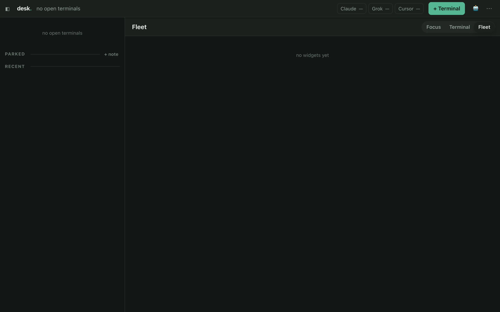

03:07· night shift
Somewhere, right now, an agent is working the night shift.
It is 03:07 where you are. Good — this is when it matters.
Give Chronos a project, a repo, and a ticket. It spawns the agent, watches for trouble, and tells you what happened.
git clone https://github.com/leorfer23/getchronos.git && cd getchronos
npm ci
npm startThe night's log
Nine hours, real behavior, nothing invented. Every line below maps to something true in the daemon's own docs.
-
Ticket filed. Worktree opened.
A ticket is a commitment — a key, a lifecycle, a file the agent actually reads. Its own git worktree means it can't fight another agent over a dirty tree.
src/tickets.ts · src/worktrees.ts -
A cheap model grades. An expensive one builds.
Every ticket is graded for difficulty before anything spends real money, so a trivial fix never gets billed to the model reserved for the hard stuff.
src/quota-gate.ts -
storefront stalls. It files a card. It does not retry.
When a run stops emitting progress, the supervisor kills it and opens an approval card. An automatic retry on a real failure is just the same failure again, twice as expensive.
src/monitor.ts -
docs-site stops and asks. Your phone buzzes.
src/asks.ts · src/ask-robert.tsmc askparks the run on a real question instead of guessing. It goes to the coordinator first, who answers it from the project's own memory, or wakes you. -
You answer from bed. It resumes.
A headless run can be interrupted into a live terminal mid-flight, and back out again, without losing its context.
POST /api/runs/:id/continue -
A review run reads the diff.
Plan, build, review, grade, CI-fix, merge-gate — each is its own run, with its own prompt and its own tool scope.
src/runner.ts -
Rework, round two. Oldest complaint first.
Every review is fed back in full, in order, with one instruction: satisfy all of them at once. A ticket once oscillated three rounds because it wasn't.
src/tickets.ts · evals/cases/rework.json -
Merge gate.
The last run before anything lands checks what was promised against what actually shipped.
src/runner.ts -
You wake up. The PR is open.
What it cost and what it learned are both sitting there — the learning part a file you can read, not a black box, mirrored one-way to
src/notes.ts · src/recall.tsnotes/<project>/*.md.
This is the actual Desk
Not a mock this time — the real wall of cards.

The Desk

Ticket → run

Stop and ask

Phone
Drives whichever CLI you already pay for
One interface behind all of them, so a cheap model can grade a ticket and an expensive one can build it.
Guardrails, honestly
- Sandbox, per job: off / guard / strict. guard denies secrets and every other project's directories, kernel-enforced via Seatbelt. macOS-only — elsewhere jobs run unsandboxed, and the daemon says so.
- Project scoping is a security boundary. Any endpoint that touches a run or ticket by id checks it belongs to the caller's project. A missed check once let one project drain another's mailbox.
- Budgets and a burn guard: wall-clock timeout, per-run and daily spend caps, concurrency limits, and a halt on runs/hour and $/hour — a runaway can spend a whole day's budget in four minutes.
- Agents run with
--dangerously-skip-permissions. That's what unattended autonomy means. Everything above exists to bound it.
What this is not
- Not a hosted service, a CI system, or a product with a support contract.
- Built for one trusted operator on one machine — no multi-user model. The admin token is a bearer credential, not a login.
- Not something that quietly retries a real failure, or merges a change without the checks you configured.
- Open because the patterns are worth stealing — not because it's finished.